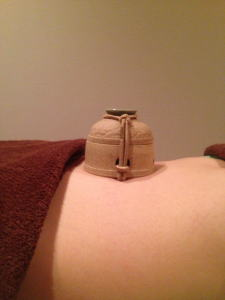
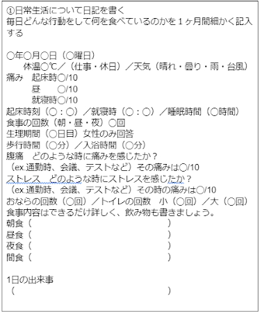

鍼灸、整骨、接骨、美容鍼灸、マッサージ、整体、カイロプラクティック、O脚矯正、不妊、エステでお困りの方はTeaching Beauty鍼灸マッサージ整骨院へ。
電話でのご予約・お問い合わせはTEL.03-6413-7803
〒154-0014 東京都世田谷区新町3-21-1さくらウェルガーデン301号室
過敏性腸症候群（IBS）
過敏性腸症候群（Irritable Bowl Syndrom）とは

【概説】過敏性腸症候群と聞いて聞いたことないという方も多いのではないでしょうか？ この病気は英語で、(Irritable刺激に敏感な、 Bowl腸、Syndrom症候群）の頭文字を取ってIBSと言います。IBSで知っている方もいるかもしれません。 CMなどでもIBSは取り上げられる程です。 この過敏性腸症候群で悩んでいる方はおよそ1,200万人もいるとされています。 軽い症状も含める8?10人に1人がIBSによって、腹痛、下痢、便秘、おなら、腹部膨満感などのお腹の症状に苦しんでいるとされています。その他にも、頭痛、頭が重い、吐き気、食欲不振、甘い物を欲する、倦怠感、意味もなく落ち込む、うつ症状を伴う方もいる程、大変重い症状が出てしまうのです。また、IBSは必ずこの症状が出るという物ではなく、個人差がとても大きいのが特徴でもあります。 IBSは症状が重いため会社や学校を休む理由で風邪に次いで多いとされています。 IBSの年齢は比較的若い方に多く10?30代に多いとされています。男女比は1:1.67と若干、女性に多い傾向があります。また、加齢と共に症状が落ち着いてくるとの報告もあります。 IBSには、下痢型、便秘型、混合型、ガス型、分類不能型の５種類があるとされています。 下痢型は男性に多く、便秘型は女性に多いとされています。
症状が多い順としては、便秘型→下痢型→混合型→分類不能型→ガス型とされています。 これは治りやすい順としても同じことが言えます。 便秘型→下痢型→混合型→分類不能型→ガス型の順番で治りやすく、最もガス型が治りにくいとされています。そのため、ガス型で悩んでいる方が多いということになります。また、便秘型が最も治りやすいということになります。
発症割合で言うと下痢型29％、便秘型24％、混合型47％で、ここに最近、分類不能型やガス型があることが最近分かってきました。 IBSの患者さんは腸での吸収力が弱いためか、太っている方は発症しにくいというデータがあります。 そのため、痩せ型の人にIBS患者が多い特徴があります。 患者さんはお腹が調子が悪いからと病院に行っても、病院の先生が、IBSについての知識がまだまだ乏しいため、『たまたまじゃない？、気のせいだと思うよ、考え過ぎだよ！ストレスじゃない？神経質だからいけないんだ！』と患者を責め立てる医師も少なくない。 というのも、大腸カメラなど複数の精密検査をしても腸に異常はなく薬を飲んでも効かない、そのため医者は自分の知識不足を棚に上げて患者が悪いと判断してしまう医師も多いのが現状です。
また、日本は世界と比べてIBSの研究が遅れていることも要因として考えられます。
IBSになると急激な下痢が突如として襲ってくるので、トイレがどこにあるか把握しておかないと不安。トイレがないと思うと、恐怖に感じるなど精神的な不安が強くなってしまいます。
だから、IBSの患者さんはどこの病院に行ったら良いのかと困ってしまってる方が多いのが現状です。 また、消化器内科を受診する方の８割はIBSの患者さん、というデータもある程、IBSで悩んでいる患者さんが多いのです。しかし、実際にIBSで病院を受診する方は半分以下と言われています。 症状を人に話したくない、体質だから仕方無いと思い、市販薬でどうにか過ごしているという方が多いようです。IBSは放っておくと症状が悪化してしまう病気です。また、トイレが不安で外出ができなくなるなど、生活の質を落としてしまうことも問題になります。
IBSはお腹が痛いだけと思われてしまいますが、様々な症状によって、外出を避けたり、仕事に行けなくなったり、電車、エレベーター、映画、飛行機を避けたりするので著しく生活の質が低下してしまいます。 そんな方のために、当院では東洋医学的判断によりIBSの鍼灸施術を行っております。 自律神経調整や免疫力アップ、腸の働き調整などの観点からIBSを完治へと導きます。 IBSでお困りの方はご相談ください。
診断基準
最近3ヵ月間、月に4回以上腹痛が起こり、次の項目の内、２つ以上があること1.排便をすると症状が落ち着く
2.症状がある時に排便の頻度が変わる
3.症状がある時に、通常時より排便の状態が変わる（下痢、便秘など）
※6ヵ月以上前から症状があり、最近3ヵ月間は上記基準を2つ以上満たすことが条件
IBS患者さんの特徴
・痩せ型・真面目で我慢強い方
・相手に気遣いができる良い人
・神経質な人
・几帳面な人
・責任感が強い人
・緊張しやすい人
・ストレスを溜め込みやすい方
・ストレスの発散方法がない方 など
IBS症状が出やすい場面
緊張状態の時や、環境が変わった時に発症しやすい特徴がある。約半数は人生を変える大きな出来事があった時から症状が発症しているとされている。
例えば、 面接、転職、部署移動、新学、大会、会議、試験、引っ越し、近親者との死別、入学式、入社式、新しい仕事など 。
また、転職をしたり、学校を卒業したり、会社を辞めたりすると症状が落ち着く人も多いため、ストレスとの関係が切っても切り離せないと考えてしまうのです。
原因
はっきりとした原因はわかっていません。 しかし、今までは「ストレスが原因で起こる」ということが有力でしたが、現在はストレスとの関係はあるものの直接的原因でないことがわかってきました。ストレス説の考え方は、まず、腸管は副交感神経の刺激を受けると腸管が活発に動き、交感神経が刺激されると腸管の動きが抑制されるのですが、ストレスを受けると腸管の蠕動運動（腸管の動き）が抑制されてしまいます。 そうすると、腸管内に食べ物が留まる時間が長くなるため、食べ物が発酵してガスが出てオナラがしたくなってしまう。
また、腸管の動きが遅くなることで便秘になる。
それと、過度なストレスのために水分の吸収を行う大腸が水分の吸収をちゃんと行わないため、下痢になってしまうと考えられていました。
しかし、現在では食べ物との関係が大きいことが分かってきました。 IBS患者は特定の食べ物を消化吸収できないために下痢や便秘などの様々なお腹の不調になることが分かってきた。 これは小腸で吸収されない食べ物を食べてしまうと、その吸収されない糖質が浸透圧の関係で、小腸に水分を引き込みそのまま、大腸に行くので通常より水分量が多い状態で大腸にくるので下痢になる。 また、大腸には通常、食物繊維が届くのだけれど、食物繊維以外の小腸で吸収されなかった糖質も運ばれてくるので、それを分解しようと腸内細菌が発酵させて頑張るので、その影響で、水素、メタン、二酸化炭素のガスが出て大腸壁をガスが溜まりパンパンになって腸壁を刺激するために、腹痛などの様々なお腹の症状が出るとされています。 また、IBSの人は通常の人より腸が過敏になっていることがわかっています。 実験で大腸に風船を入れて膨らませると、普通の人は全く何も感じないのに対して、IBSの人は極度の腹痛を訴えることがわかっています。この実験からもわかるように、IBSの人はガスや食べ物、水分量過多によって腸管が刺激されることにより様々なお腹の症状が出ることが分かっています。
また、感染性胃腸炎などの感染症後にIBSになったと言う方もいるため、細菌性腸炎、ウイルス性腸炎を起こした際の炎症が腸管壁に何らかの影響を及ぼしてしまい、腸管が過敏な状態になってしまったのではないかとも考えられています。ちなみに、感染性胃腸炎を起こすと、腹痛、下痢（おしっこが出ているような下痢）、嘔吐の３つの症状を伴います。 皆さんも過去にそのような感染性胃腸炎を経験をしてからIBSの症状が出ていないでしょうか？少し考えてみてください。
その他にも、腸の粘膜にあるセロトニンというホルモン量にも関係しているとされています。
また、セロトニンが多いと下痢になり、少ないと便秘になることがわかってきています。 まだまだ、IBSははっきりとした原因がわかっていないのですが、分かってきていることを改善していくことも大変重要になるのです。
FODMAPについて
小腸から吸収されずらく大腸で異常発酵しやすい糖質のことをFODMAPと言います。この食品は腸内で発酵してガスを発生させやすい食べ物です。この食品が原因でIBSになると考えられています。
・Fermentable(発酵性の)
・Oliglsaccharides（オリゴ糖、少糖）
①ガラクトオリゴ糖
豆類（レンズ豆、ひよこ豆、大豆、納豆、きなこ、エンドウ豆、豆乳など）、乳製品など
②フルクタン
小麦、ライ麦、大麦、ライ麦、レタス、ネギ、アスパラ、チョコレート、チーズ、玉ねぎ、にんにくなど
・Disaccharides（二糖類）
①乳糖（ラクトース）
乳製品（牛乳、ヨーグルト、チーズ、アイスクリーム、生クリームなど）
・Minosaccharides（単糖類 フルクトース）
果糖（果実、デーツ、蜂蜜などに含まれる糖の一種）
・And
・Polyols（ポリオール）
①ソルビトール
じゃがいもでんぷんやとうもろこしでんぷん由来の天然の糖アルコールです。 これはカロリーが砂糖と比べると７５％と低いため、ダイエット食品やお菓子に含まれていて低カロリー食品に多く含まれています。 ソルビトールはエリストリトール、キシリトールと同じく腸で分解吸収されない糖アルコールで、これは口に入れた時にひんやりと清涼感が出るのでガム、飴、ジュース、スナック菓子などに使われている。
煮豆、佃煮、生菓子、魚肉練り物、海藻類、果物（りんご、梨、桃、プルーン、イチジクなど）
②キシリトール
しらかばの幹やとうもろこしの芯を加工して作られる。 こちらもカロリーが低い糖アルコールのため人工甘味料に使われている。 テレビのCMでもよく聞くと思います。こちらは清涼感のあるシュガーレス菓子に多く含まれる。有名なのがキシリトール入りのガムではないでしょうか。
また、キシリトールは自然界の食品にも含まれている。
マッシュルーム、イチゴ、カリフラワー、ほうれん草、にんじん、きのこ類など
※それ以外にも腸に刺激を与える物はよくないとされています。
暴飲暴食をさけ、アルコール、香辛料、カフェイン、炭水化物や脂質の多い食事、タバコ、サプリメント、コンビニ食、冷凍食品、カップ麺などの添加物などはIBSには良くないです。
施術方法について
病院での施術法①精密検査
血液検査（貧血や炎症数値のチェック）、大腸カメラ（大腸に異常がないかのチェック）を行う ②薬物療法
大腸の動きを整える薬や腸の環境を整える整腸剤、漢方薬、抗うつ剤、抗不安薬が使われる。
③精神科、心療内科受診
ストレスなどのコントロール方法や薬でのコントロールを行う。
しかし、西洋医学では根本的な治療法はなく、一生涯、調子の悪い腸と付き合っていきましょうという考えが大前提にあるので、医師と患者との治したいという気持ちに誤差が生じてしまっている。 患者さんはどうしても治したい！医者はうまく付き合っていきましょうね。では、根本的な要求に違いがありますよね。
当院での施術法
IBSは早期の治療開始が重要です。
当院では過敏性腸症候群を改善するために、独自に開発した鍼灸施術、温熱療法、食事指導、運動指導、自律神経調整、血流改善、免疫力アップと様々な観点から、腸の異常興奮から発生する腸過敏を改善へと導きます。
鍼灸では胃腸の興奮を抑制したり、興奮させたりと腸の働きを調整することができると科学的にも証明されています。また、アメリカでは多くのIBS患者が鍼灸施術を行って良い結果をもたらしているというデータもある程です。
鍼灸施術では最低半年、長い方ですと２年以上通う方もいますが、多くの方が『症状を感じなくなった、普通の食事が取れるようになった』と腸の状態が改善している方が多くいらっしゃいます。 東洋医学の良いところは西洋医学との併用が可能であることです。ですから、病院にかかりながら鍼灸施術を行うことができるのです。
IBS、クローン病、潰瘍性大腸炎でお困りの方は、当院にご相談ください。
全国的にも過敏性腸症候群の根治療法を行っているは治療院は少ないです。そのため、新幹線で通院されている患者様もいる程です。お困りのようでしたら一度ご相談下さい。
しかし、本気で治したいと強い意思をお持ちの方のみご連絡ください。
→無料相談はこちらから
セルフケア
①日記を付ける
②FODMAP食
FODMAP食を１ヶ月行い、それで改善がみられた方は次のステージに進みます。
IBSの人は全ての高FODMAPSに影響が出るわけではなく、人によっても異なるので、１週間ごとに試しに１食材ごと体内に入れていき症状が出るかを確認していく。
また、量によっても症状が出たり出なかったりもするので量の１週間単位でのチェックも行う。 ③運動
運動を行うとIBSの症状が治るという研究データがある
IBS以外が疑われる危険な症状
・熱が１週間以上続く・ドロドロの便
・血便が続く
・関節痛が続く
・３ヶ月連続で体重が減少する
・体重減少
・５０歳以上でIBSを発症
・炎症性腸疾患の家族歴がある
（大腸癌、潰瘍性大腸炎、クローン病、セリアック病など）
※テニスのジョコビッチ選手が小麦、ライ麦、大麦に含まれるグルテンに対する遺伝性不耐症（セリアック病）がわかり、グルテンを除いたら調子が良くなったとのことで世界的にもグルテンフリーが良いのではないかと広まりました。
また、 IBSと診断された方のわずか５％しか他の病気が見つからないとのデータもありますが、上記の場合は大腸カメラなどの精密検査をオススメいたします。
まとめ
IBSは運動をし、食事に気をつけること、規則正しい習慣を身につけること、自律神経を整えることが大変重要です。また、IBSは一生付き合っていくものではありません。 体質を改善すれば食べ物に注意しないでもお腹の調子が悪くなくなる方も沢山いらっしゃいます。高FODMAPの食事をずっと行っていると食事の楽しみが無くなってしまいますよね。
だから、皆さんは本気で治したいと思っているはずです。
鍼灸施術で体質を変えてIBSを根本から変えませんか？ お困りの方は当院までご相談ください。
【患者様の声】
過敏性症候群（４２歳女性 Ｙ.Ｉ様）
治療に通ったきっかけは電車に乗るとお腹が痛くなり１駅ごとに電車を降りてトイレに駆け込む状態でした。その結果、会社にも遅刻がちになり同僚や上司にも迷惑をかける為、仕事を辞めることになりました。病院での治療も２年続けていたが全くよくならなく悪くなっているようさえに感じました。
知り合いから鍼灸が過敏性腸症候群にいいと聞き近くの治療院をネットで検索してこちらに通いだしました。
治療4回目からお腹を心配しないで電車に乗れるのようになりました。今では１時間程の距離は電車に乗っていても全く心配がありません。
おまけに生理不順と手足の冷えもなくなったので大変助かっております。
私のようにお困りの方は一度ご相談するといいと思います。
過敏性腸症候群、潰瘍性腸症候群、クローン病施術
| １回 | \45,000(税別) |
|---|---|
▼無料相談、ご予約はこちらから▼
TEL：03-6413-7803
→動画（youtube）で詳しい解説を見る
Ｔｅａｃｈｉｎｇ Ｂｅａｕｔｙ

〒154-0014
東京都世田谷区新町3-21-1
さくらウェルガーデン3階
TEL：
03-6413-7803
→アクセス
診療時間
【通常診療】
月火金土
午前：09:00～13:00
午後：15:00～19:00
木曜日
午前：休診
午後：15:00～19:00
※当日予約可
休診日
水、木(午前)、日、祭日
夜間診療
月火木金土／19:00～21:00
※通常価格の1.5倍料金
※当日の19時までにご予約の場合のみ
※往診の場合も19時までにご予約下さい
早朝診療
月火木金土／07:00～09:00
※通常価格の2倍料金
※前日の19時までにご予約の場合のみ
交通事故・労災・
各種保険取扱い